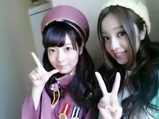

| 2014/04 23 Wed | ろってぃーだよ(*・ｘ・) ノ~~~♪ |
こんばんわ //
はいっ ピース
 あれっ？ 違う...
あれっ？ 違う...

こうかっ...？
もおええっ
 笑 何でもええ..*
笑 何でもええ..*
やさ女 さいとうゆったん
 でしたぁ〜。笑
でしたぁ〜。笑
あっ まだblog終わんないよ。/
やたらと最近、blogのコメントや握手会で質問されてることがあって、、、 その質問が
『 乃木坂46SHOWの「 乃木坂の詩 」の時どうして ろってぃーだけ片足すそまくってるのぅ？ 』
ここだけの話ね、本心こう思ってたの...
『おう=・ω・=？ どうしてそこまで気になるんだあ〜？』ってね \(>▽<)/ 笑
あっ)))) あかんあかん、
言っちゃった言っちゃった
 し〜っ
し〜っ
・・・・・・・ うそうそっ*^^*
えっとね、まあぶっちゃけそんな大した理由はないんだけどねっ
たんに 片足まくってた方がスッキリ見えるしバランスいいんぢゃないかな？ って思ってあげてただけです

とゆうかね、 自分でも一人だけあげてることに気づいてなくって、皆に言われて気がついたよん..*
皆 よく見てるね〜(*´ω｀*) さすがだっ !!!
まあでもあれだね、、、 もっと見てくれたら...
嬉しいねっ
嬉しゅうキモチや..*
ぢゃあ〜 ねっ (*´ー｀*)
今からお風呂入るけど先に言っとこぉ
おやすみなさい... 大好きだよ？ のし
コメント(203)
2014/04/23 21:18